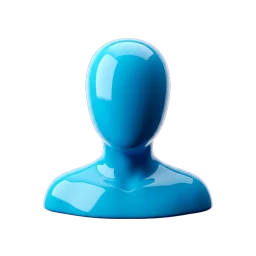
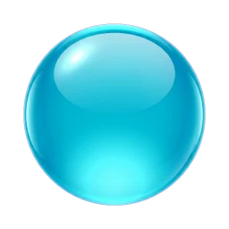
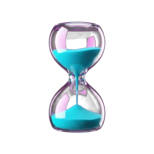
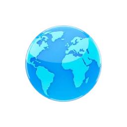

Ocho años en que todo lo que se encendía tenía el mismo aire. Le pusieron nombre en 2017, cuando ya no existía.

Arrastrá para girar · rueda para acercar



Ocho aires de familia. Tocá cualquiera para verla grande.
Cinco pantallas que todos vimos alguna vez. Están escritas, no dibujadas: tocá una para verla a pantalla completa.
El vidrio volvió en 2025 con otro nombre: es el material del que está hecha esta página.
Personajes y fondo generados con Rezona.